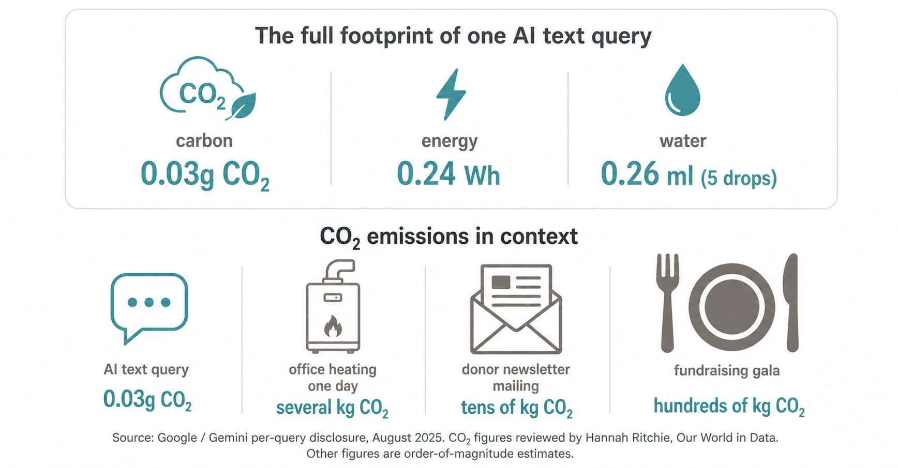

I've had a couple of conversations recently where nonprofit leaders told me their teams felt uncomfortable using AI because of the environmental footprint. One was considering scaling back their use of AI. They mentioned it almost as a point of principle.
I respect that instinct. But I think the framing is off.

In August 2025, Google published the first detailed per-query environmental data for a major AI model: the median Gemini text prompt produces around 0.03 grams of CO2. Hannah Ritchie at Our World in Data reviewed the disclosure and concluded that earlier estimates of AI's per-query footprint were likely ten times too high.
For context: a gas furnace running through a cold office day, staff commuting by car, a donor newsletter printed and mailed to a few thousand supporters, a catered fundraising gala. None of those get the same scrutiny. They shouldn't be cancelled either. But the comparison matters.
The systemic picture is more complicated. Data center energy demand is growing fast, training large models is genuinely costly, and those concerns belong in policy and procurement conversations. Providers vary on renewable energy commitments, and that's worth knowing when you choose tools.
But none of it means a 12-person nonprofit should feel guilty about using AI to help a case manager summarize a client file faster, or to process a grant report that would otherwise take half a day.
Inaction isn't neutral. If a team pulls back on AI out of environmental concern while still printing mass mailings and running gas heat through winter, the math doesn't hold. And the people who could have been better served don't figure into that calculation at all.
Hold the industry accountable. Push for transparency on energy data. Choose tools from providers serious about renewables. Those are meaningful actions.
Don't let a reasonable concern, scaled to the wrong level, become a reason to step back from something that could make your mission work better.
Has your team had this conversation? And if so, how did you land on it?
The AI footprint: what do we actually know? — Hannah Ritchie →